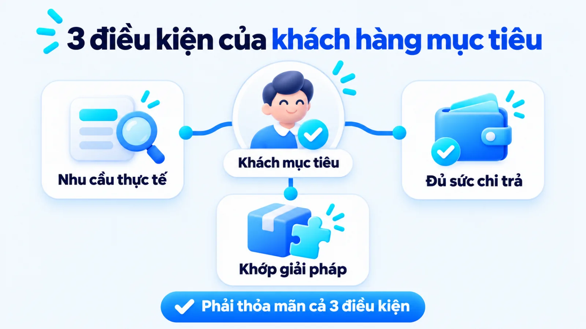
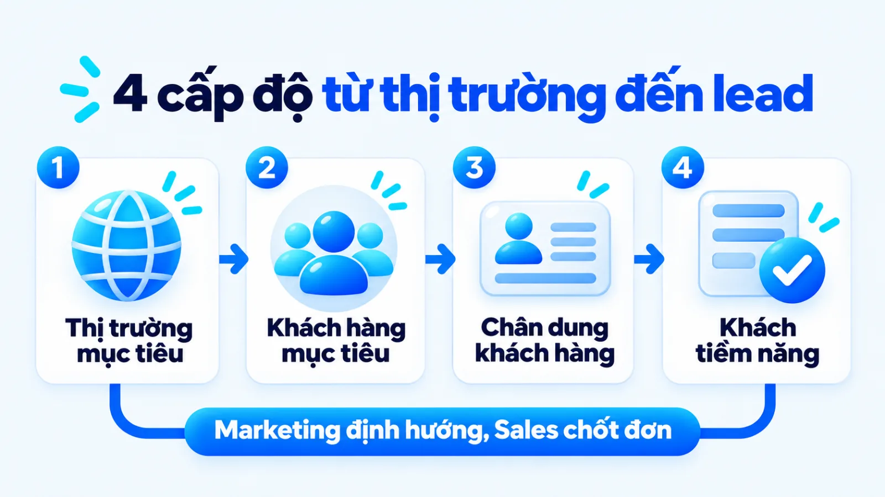
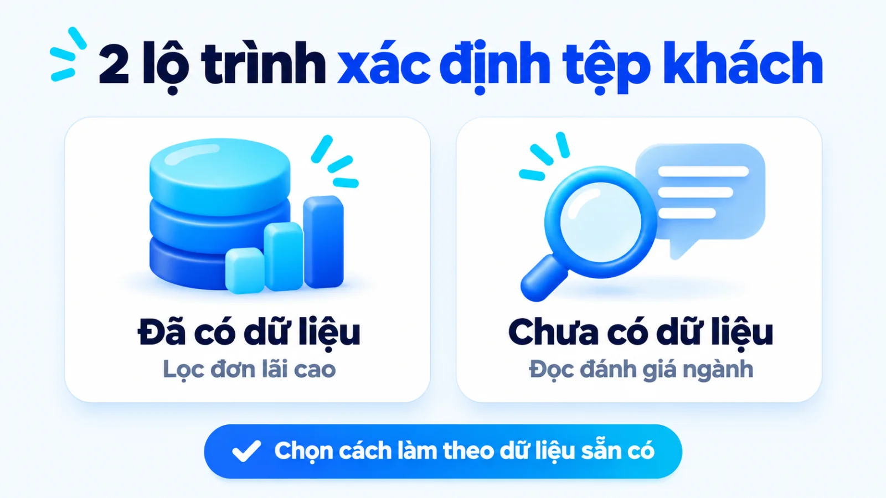
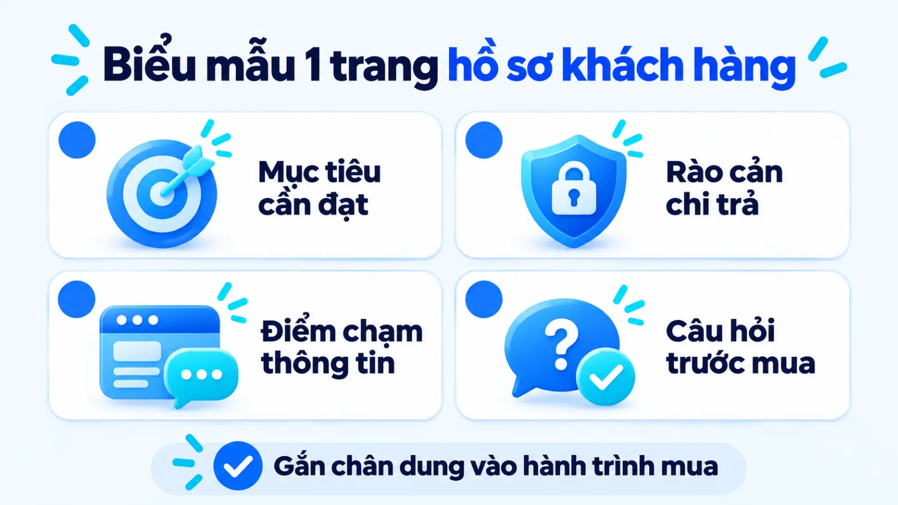
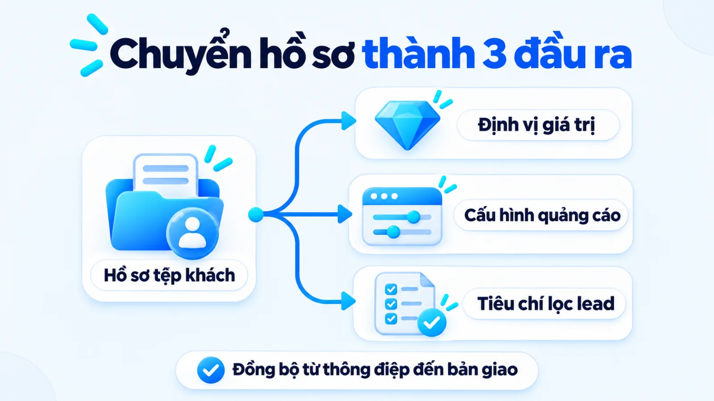
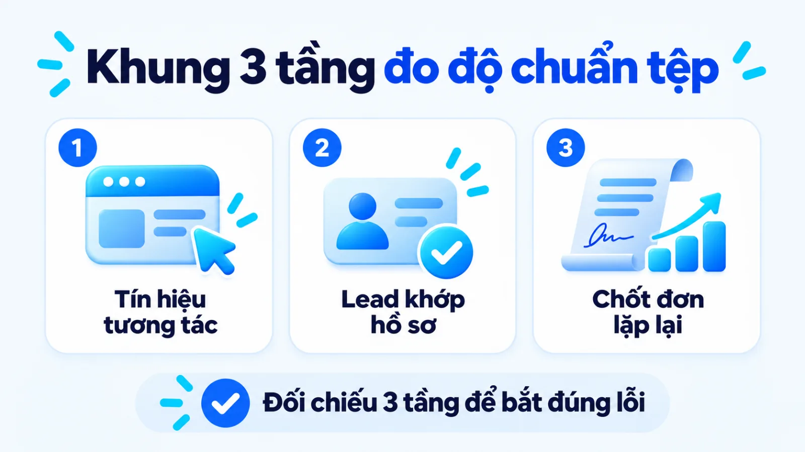

Khách hàng mục tiêu là gì và cách xác định
Hiểu rõ khách hàng mục tiêu là gì chính là xác định nhóm người mua trong thị trường mục tiêu có nhu cầu thực tế, đủ khả năng chi trả và khớp với giải pháp mà doanh nghiệp tập trung nguồn lực phục vụ. Với doanh nghiệp vừa và nhỏ, chọn tệp khách hàng thực chất là quyết định phân bổ nguồn lực: nếu cố chiều lòng mọi người, thông điệp sẽ mờ nhạt và ngân sách dễ dàn trải cho những liên hệ không tạo ra doanh thu. Khi khóa rõ ranh giới tệp khách từ đầu, đội ngũ mới thống nhất được định vị, chọn đúng kênh và bàn giao tiêu chí lọc khách nhất quán sang bộ phận bán hàng. Tôi là Lê Tuấn Việt, Marketing Leader tại TAKI Group. Trong bài viết này, tôi phân tích ranh giới giữa các khái niệm dễ nhầm, cách xác định tệp theo dữ liệu sẵn có và khung chỉ số nhận diện dấu hiệu chọn sai tệp.
- Đăng ngày
- Cập nhật

Tóm tắt nhanh
- Khách hàng mục tiêu phải thỏa mãn đồng thời ba điều kiện: có nhu cầu hoặc vấn đề thực tế, có khả năng chi trả kèm quyền quyết định và khớp với năng lực phục vụ của doanh nghiệp.
- Cần tách bạch bốn nhóm yếu tố hành vi người mua (Văn hóa, Xã hội, Cá nhân, Tâm lý) với môi trường vĩ mô PESTEL và mô hình chiến lược STP để không nhầm lẫn cấp độ phân tích.
- Doanh nghiệp đã có lịch sử giao dịch nên xác định tệp từ nhóm khách mua lặp lại có biên lợi nhuận tốt, trong khi doanh nghiệp mới cần đi từ nghiên cứu đối thủ và kiểm chứng giả thuyết nhỏ.
- Hồ sơ khách hàng mục tiêu chỉ phát huy tác dụng khi chuyển hóa thành tuyên bố định vị, cấu hình nhắm chọn kênh và bộ tiêu chí lọc khách hàng tiềm năng bàn giao cho đội Sales.
Mục lục bài viết8 phần
Khách hàng mục tiêu là gì trong marketing
Khách hàng mục tiêu (Target Customer) là nhóm người tiêu dùng cá nhân hoặc tổ chức nằm trong thị trường mục tiêu có nhu cầu thực tế, có đủ khả năng chi trả kèm thẩm quyền quyết định và khớp với giải pháp mà doanh nghiệp tập trung nguồn lực tiếp thị để phục vụ.
Theo hướng dẫn nghiên cứu thị trường của U.S. Small Business Administration (SBA, Cơ quan Quản lý Doanh nghiệp Nhỏ Hoa Kỳ), việc xác định người mua cần kết hợp phân tích hành vi tiêu dùng với xu hướng kinh tế để kiểm chứng nhu cầu, thu nhập và mức giá sẵn sàng trả. Trong marketing tổng thể cho doanh nghiệp vừa và nhỏ, đây là bước đặt móng trước khi chọn kênh quảng cáo.

Ba điều kiện cấu thành nhóm khách hàng mục tiêu
Nhiều đội ngũ nhầm giữa người có hứng thú xem nội dung với khách hàng mục tiêu thực sự của doanh nghiệp. Một phân khúc chỉ được coi là khách hàng mục tiêu khi hội tụ đủ ba điều kiện cấu thành dưới đây:
- Nhu cầu và nỗi đau thực tế: Khách hàng đang gặp một vấn đề cụ thể hoặc có mong muốn rõ ràng mà sản phẩm, dịch vụ của doanh nghiệp giải quyết trực tiếp.
- Khả năng chi trả và quyền quyết định: Khách hàng có ngân sách khớp với mức giá bán và có quyền tự quyết hoặc duyệt khoản chi đó.
- Độ khớp với năng lực phục vụ: Địa bàn sinh sống, thói quen giao dịch và yêu cầu hậu mãi của họ nằm trong phạm vi mà hệ thống vận hành của doanh nghiệp đáp ứng có lãi.
Điểm tôi muốn làm rõ là việc chọn khách hàng mục tiêu cũng đồng nghĩa với quyết định từ bỏ những nhóm không phù hợp. Với SME (doanh nghiệp vừa và nhỏ có quy mô nhân sự và ngân sách giới hạn), cố bán cho mọi người sẽ làm cạn ngân sách vì thông điệp không chạm đúng rào cản của bất kỳ ai. Chọn tệp là chọn nơi dồn nguồn lực.
Bốn nhóm yếu tố ảnh hưởng hành vi mua sắm
Để hiểu vì sao hai người có cùng mức thu nhập lại chọn hai nhãn hàng khác nhau, người làm nghề cần tách bạch các biến số tác động trực tiếp vào tâm lý người mua khỏi các mô hình vĩ mô. Theo khung lý thuyết hành vi người tiêu dùng của Philip Kotler, bốn nhóm yếu tố ảnh hưởng trực tiếp gồm Văn hóa, Xã hội, Cá nhân và Tâm lý.
Hai nhóm đầu định hình bối cảnh bên ngoài của người mua: yếu tố Văn hóa (hệ giá trị, truyền thống vùng miền và tầng lớp xã hội) tạo nên thói quen tiêu dùng dài hạn, còn yếu tố Xã hội (gia đình, đồng nghiệp, nhóm tham khảo và vai trò xã hội) thúc đẩy nhu cầu tìm kiếm sự đồng thuận khi mua hàng.
Hai nhóm sau quyết định trực tiếp hành động rút ví của từng cá nhân: yếu tố Cá nhân gồm độ tuổi, giai đoạn vòng đời, nghề nghiệp, hoàn cảnh kinh tế và lối sống riêng; còn yếu tố Tâm lý gồm động cơ thúc đẩy, nhận thức thương hiệu, trải nghiệm mua trước đó cùng niềm tin trước thông điệp tiếp thị.
Trên nhiều tài liệu tổng hợp, người viết hay nhầm lẫn khi ghép yếu tố Tâm lý vào chữ P và yếu tố Văn hóa vào chữ E của mô hình PEST. Thực tế, PEST (Chính trị, Kinh tế, Xã hội, Công nghệ) hoặc PESTEL (thêm Môi trường và Pháp lý) chỉ dùng để phân tích bối cảnh vĩ mô bên ngoài ngành hàng.
Ngược lại, bốn yếu tố Văn hóa, Xã hội, Cá nhân và Tâm lý dùng để giải mã hành vi người mua ở cấp độ vi mô. Đây là dữ liệu đầu vào cho mô hình STP (phân đoạn thị trường, chọn thị trường mục tiêu và định vị thương hiệu) để doanh nghiệp khóa đúng tệp khách cần phục vụ.
Xét một ví dụ: trong ngành thực phẩm dinh dưỡng tại Hà Nội, nhân viên văn phòng mua hạt ăn liền ưu tiên đóng gói nhỏ tiện lợi theo bữa, còn người mua làm quà biếu dịp lễ lại đặt nặng hộp sang trọng và thương hiệu uy tín. Do khác biệt về động cơ tâm lý, hai nhóm này không thể dùng chung một trang đích bán hàng.
Khách hàng mục tiêu là gì so với lead và persona
Hiểu rõ khách hàng mục tiêu là gì so với khách hàng tiềm năng và chân dung khách hàng giúp doanh nghiệp không trộn lẫn công việc hoạch định của Marketing với công việc chốt đơn của Sales. Nếu khách hàng mục tiêu là tệp đối tượng chuẩn được xác định ở tầng chiến lược, thì khách hàng tiềm năng (Lead hoặc Prospect) là những cá nhân cụ thể đã bộc lộ tín hiệu quan tâm tới sản phẩm.
Phân biệt với thị trường mục tiêu và persona
Theo tài liệu hướng dẫn năm 2022 của Nielsen Norman Group (NN/g, tổ chức nghiên cứu trải nghiệm người dùng tại Hoa Kỳ), chân dung khách hàng (Buyer Persona) là bản mô tả giả định bám sát dữ liệu thực địa về người dùng mục tiêu điển hình nhằm định hướng sản phẩm và tiếp thị. Bảng ba cột dưới đây đối chiếu bốn khái niệm này từ cấp độ vĩ mô xuống vi mô.
| Khái niệm | Phạm vi và bản chất | Vai trò và bộ phận dùng |
|---|---|---|
| Thị trường mục tiêu | Toàn bộ phân khúc thị trường mà doanh nghiệp quyết định thâm nhập | Định hướng danh mục sản phẩm; Ban giám đốc và Marketing |
| Khách hàng mục tiêu | Nhóm người mua cụ thể trong thị trường mục tiêu mà chiến dịch nhắm tới | Chọn kênh, phân bổ ngân sách; Bộ phận Marketing |
| Chân dung (Persona) | Hồ sơ mẫu đại diện cho một nhóm khách hàng mục tiêu dựa trên dữ liệu | Viết thông điệp, thiết kế điểm chạm; Marketing và Sản phẩm |
| Khách hàng tiềm năng | Cá nhân hoặc tổ chức đã để lại thông tin hoặc tương tác thực tế | Sàng lọc, tư vấn và chốt đơn; Đội ngũ Sales và hệ thống CRM |
Giới hạn khi đọc bảng: một cá nhân để lại số điện thoại chưa chắc đã thuộc nhóm khách hàng mục tiêu nếu họ không đủ khả năng chi trả. Việc tách rõ bốn lớp khái niệm này khi hoạch định chiến lược marketing giúp Marketing không chạy theo liên hệ ảo, còn Sales và CRM (hệ thống quản lý quan hệ khách hàng) không mất thời gian gọi người ngoài tệp.

Năm nhóm khách hàng mục tiêu theo hành trình mua
Bên trong cùng một tệp khách hàng mục tiêu, không phải ai cũng sẵn sàng rút ví ngay lần đầu nhìn thấy quảng cáo. Khi chia theo trạng thái nhận thức trên hành trình mua, tệp khách hàng mục tiêu được phân thành năm nhóm dưới đây:
- Nhóm chưa nhận biết vấn đề: Đang chịu đựng sự bất tiện trong công việc hoặc sinh hoạt nhưng coi đó là chuyện bình thường và chưa chủ động tìm giải pháp.
- Nhóm đang tìm hiểu vấn đề: Đã nhận ra điểm nghẽn và bắt đầu tra cứu nguyên nhân, cách tự khắc phục nhưng chưa gắn với một loại sản phẩm cụ thể.
- Nhóm đang so sánh giải pháp: Đã biết mình cần loại sản phẩm hoặc dịch vụ nào và đang đặt các phương án, mức giá, nhà cung cấp lên bàn cân đối chiếu.
- Nhóm sẵn sàng mua ngay: Đã chốt được tiêu chí lựa chọn, có sẵn ngân sách và chỉ cần một lời đề nghị rõ ràng về điều kiện giao dịch hoặc bảo hành để xuống tiền.
- Nhóm khách hàng cũ mua lại: Đã trải nghiệm thực tế giải pháp của doanh nghiệp, quyết định quay lại dựa trên chất lượng phục vụ và mức độ hài lòng sau bán.
Việc gom cả năm nhóm này vào một mẫu quảng cáo khuyến mãi chốt đơn là nguyên nhân khiến nhiều chiến dịch thất bại. Ba nhóm đầu cần nội dung giải thích cơ chế và bằng chứng chuyên môn từ Marketing, trong khi hai nhóm cuối mới cần ưu đãi thương mại và kịch bản tư vấn trực tiếp của Sales. Đây cũng là nền tảng để triển khai Inbound Marketing theo từng chặng mua và bàn giao khách đạt chuẩn cho đội Sales.
Phương pháp xác định khách hàng mục tiêu cho SME
Phương pháp xác định khách hàng mục tiêu cho doanh nghiệp vừa và nhỏ cần tách bạch theo hai bối cảnh dữ liệu: doanh nghiệp đã có lịch sử giao dịch đi từ việc mổ xẻ nhóm khách hàng mang lại lợi nhuận thực, còn doanh nghiệp mới ra mắt đi từ nghiên cứu đối thủ và kiểm chứng giả thuyết nhỏ. Bảng dưới đây đối chiếu lộ trình cho hai bối cảnh này.
| Tiêu chí đối chiếu | SME đã có dữ liệu giao dịch | SME mới chưa có dữ liệu |
|---|---|---|
| Nguồn dữ liệu gốc | Lịch sử đơn hàng, phần mềm quản lý khách, biên bản tư vấn của Sales | Báo cáo ngành của SBA, đánh giá của khách trên kênh đối thủ trực tiếp |
| Phương pháp lọc chính | Phân tầng nhóm khách có biên lợi nhuận cao và tần suất mua lặp lại | Phỏng vấn sâu nhóm người dùng thử và chạy thử nghiệm thông điệp nhỏ |
| Tiêu chí chấm sức mua | Giá trị đơn hàng trung bình thực tế và thời gian thu hồi vốn quảng cáo | Mức giá đang trả cho giải pháp thay thế và chi phí chuyển đổi nhà cung cấp |
| Rủi ro cần tránh | Quán tính chỉ nhìn tệp cũ mà bỏ lỡ phân khúc mới có biên lãi tốt hơn | Vẽ chân dung trên giấy theo chủ quan của người sáng lập mà không kiểm chứng |
Giới hạn khi đọc bảng: nguyên tắc Pareto (quy luật phần lớn doanh thu tập trung vào nhóm khách hàng cốt lõi) là khung gợi ý quản trị cho doanh nghiệp đã có lịch sử đơn hàng, còn doanh nghiệp mới chỉ nên áp dụng sau khi tích lũy đủ giao dịch đầu tiên. Doanh nghiệp chỉ chốt tệp chủ lực sau khi đã trừ chi phí phục vụ và chiết khấu của từng nhóm.

Khi doanh nghiệp đã có dữ liệu giao dịch lịch sử
Với doanh nghiệp đã vận hành có doanh thu, tài sản quý nhất không nằm ở các báo cáo thị trường bên ngoài mà nằm ngay trong danh sách khách hàng đã trả tiền. Thay vì hỏi khách hàng mục tiêu là ai trên lý thuyết, tôi ưu tiên trích xuất những khách hàng có biên lợi nhuận gộp cao, ít đòi hỏi ngoại lệ vận hành và có chu kỳ mua lại đều đặn nhất trong năm qua.
Khi kết hợp dữ liệu giao dịch nội bộ với việc thu thập dữ liệu zero-party và first-party (dữ liệu khách hàng tự nguyện khai báo và dữ liệu hành vi trên kênh sở hữu), đội ngũ sẽ nhìn rõ lý do thật sự khiến nhóm khách hàng tốt nhất chọn mình. Từ đặc điểm chung của nhóm hạt nhân này, doanh nghiệp mới nhân rộng tiêu chí sang các chiến dịch tìm kiếm khách hàng mới có hồ sơ tương đồng.
Khi doanh nghiệp mới chưa có dữ liệu khách hàng
Vậy một thương hiệu mới ra mắt chưa có đơn hàng nào thì lấy dữ liệu ở đâu để lọc tệp? Theo hướng dẫn của SBA, doanh nghiệp có thể kết hợp nghiên cứu thứ cấp từ thống kê ngành với nghiên cứu sơ cấp thông qua quan sát đối thủ trực tiếp và phỏng vấn thử nghiệm nhóm nhỏ người tiêu dùng.
Khi triển khai digital marketing cho startup hoặc sản phẩm mới, cách tiết kiệm nhất là đọc kỹ các bình luận khen chê của khách hàng trên trang bán hàng của đối thủ cùng phân khúc giá. Những lời phàn nàn lặp đi lặp lại về giao hàng chậm, tư vấn hời hợt hay thiếu gói nhỏ chính là khoảng trống nhu cầu thực tế để doanh nghiệp định hình tệp khách hàng mục tiêu đầu tiên mà chưa tốn ngân sách khảo sát lớn.
Quy trình phân tích khách hàng mục tiêu 4 bước
Quy trình phân tích khách hàng mục tiêu cho doanh nghiệp vừa và nhỏ được tôi rút gọn từ quy trình 7 bước phân tích khách hàng mục tiêu truyền thống xuống còn bốn bước thực hành có biểu mẫu đầu ra rõ ràng. Việc gộp các khâu phỏng vấn, khảo sát và thu thập phản hồi thành một bước xác thực giả thuyết giúp đội ngũ mỏng tránh chia cắt đầu việc vụn vặt và lặp lại cùng một thao tác.
Bước 1: Phân đoạn khách hàng mục tiêu và lọc tệp
Thực hiện phân đoạn khách hàng mục tiêu bằng cách chia thị trường tổng thể thành các nhóm tương đồng theo bốn trục tiêu chí: Địa lý (khu vực, mật độ dân cư), Nhân khẩu học (độ tuổi, thu nhập, nghề nghiệp), Tâm lý học (lối sống, mối quan tâm) và Hành vi (tần suất dùng, lợi ích tìm kiếm). Đội ngũ cần gắn mỗi phân khúc với một tình huống phát sinh nhu cầu cụ thể.
Đầu ra: Bảng mô tả sơ bộ hai đến ba phân khúc tiềm năng, mỗi phân khúc ghi rõ vấn đề cần giải quyết và lý do họ cần sản phẩm ngay lúc này.
Bước 2: Xác thực giả thuyết bằng dữ liệu thực tế
Kiểm chứng các phân khúc giả thuyết ở Bước 1 bằng cách đối chiếu với lịch sử cuộc gọi của Sales, dữ liệu trò chuyện trên fanpage hoặc thực hiện phỏng vấn sâu trực tiếp những người thuộc nhóm mục tiêu. Thay vì hỏi những câu xã giao kiểu họ có thích sản phẩm không, hãy hỏi về lần gần nhất họ chi tiền cho giải pháp tương tự, mức giá họ đã trả và điều gì làm họ chưa hài lòng.
Đầu ra: Bản tổng hợp tách bạch rõ các dữ kiện đã được khách hàng thật xác nhận khỏi những suy đoán cảm tính ban đầu của nội bộ.
Bước 3: Đánh giá quy mô, sức mua và chi phí tiếp cận
Đặt các phân khúc đã xác thực lên bàn cân chấm điểm theo bốn tiêu chí: quy mô nhu cầu có đủ nuôi sống mục tiêu doanh thu không, sức mua có khớp biên lợi nhuận kỳ vọng không, mức độ cạnh tranh và chi phí tiếp cận dự kiến. Với SME, một tệp khách tốt là tệp vừa đủ lớn để tạo dòng tiền nhưng chưa bị các tập đoàn lớn độc chiếm.
Đầu ra: Quyết định chốt một tệp khách hàng mục tiêu trọng tâm và tối đa một tệp phụ để tập trung ngân sách trong kỳ kế hoạch.
Bước 4: Lập chân dung và bản đồ hành trình khách hàng
Đóng gói dữ liệu của tệp đã chọn thành hồ sơ chân dung khách hàng (Buyer Persona) và bản đồ hành trình khách hàng (Customer Journey Map). Theo phương pháp luận năm 2018 của Nielsen Norman Group, bản đồ hành trình khách hàng trực quan hóa chuỗi quá trình mà người mua đi qua để hoàn thành mục tiêu, kết nối từng giai đoạn với hành động, suy nghĩ, cảm xúc và điểm chạm thương hiệu.
Đầu ra: Tài liệu hồ sơ khách hàng và bản đồ hành trình mua một trang hoàn chỉnh, ghi rõ rào cản và câu hỏi của khách tại từng bước để bàn giao cho đội nội dung và bán hàng.

Cách tiếp cận với khách hàng mục tiêu và bàn giao
Cách tiếp cận với khách hàng mục tiêu chỉ mang lại doanh thu khi hồ sơ nghiên cứu được chuyển hóa thành tuyên bố định vị thương hiệu, cấu hình nhắm chọn đúng nhóm ý định trên các kênh quảng cáo và bộ tiêu chí lọc khách hàng tiềm năng thống nhất giữa Marketing với Sales. Nếu dừng ở việc vẽ chân dung đẹp mắt rồi cất vào thư mục, toàn bộ công sức phân tích sẽ không làm thay đổi kết quả kinh doanh.
Nối hồ sơ khách hàng vào định vị và chọn kênh
Từ rào cản mua đã xác thực ở bản đồ hành trình, doanh nghiệp xác lập giá trị đề xuất (Value Proposition, lợi ích cốt lõi giúp khách hàng chọn mình thay vì đối thủ) và chuyển vào chiến lược digital marketing đa kênh. Theo tài liệu phân khúc đối tượng chính thức của Google Ads Help, các nền tảng quảng cáo số cho phép tiếp cận người dùng theo nhân khẩu học chi tiết, mối quan tâm dài hạn (Affinity), ý định mua sắm chủ động (In-market) và tệp dữ liệu đã tương tác với doanh nghiệp.
Khi nối hồ sơ khách hàng vào thực thi, nhóm khách đang chủ động so sánh nhà cung cấp cần được đón bằng từ khóa tìm kiếm và tệp có ý định mua chủ động (In-market) dẫn về trang bảng giá. Ngược lại, nhóm khách mới tìm hiểu vấn đề cần được tiếp cận qua triển khai content marketing giải thích cơ chế, kết hợp tệp mối quan tâm dài hạn (Affinity) để xây dựng niềm tin.

Tiêu chí bàn giao từ Marketing sang đội ngũ Sales
Nút thắt làm nảy sinh mâu thuẫn giữa Marketing và Sales ở nhiều doanh nghiệp vừa và nhỏ là thiếu định nghĩa chung về một khách hàng đúng tệp. Để tháo gỡ, hai bộ phận cần ký nhận bốn tiêu chí bàn giao từ hồ sơ khách hàng mục tiêu sang quy trình bán hàng dưới đây:
- Điều kiện khớp hồ sơ (Fit): Khách liên hệ nằm đúng khu vực phục vụ, đúng nhóm đối tượng và có nhu cầu thuộc danh mục của đơn vị.
- Ngưỡng khả năng chi trả: Khách đã xem khoảng giá trên trang đích hoặc biểu mẫu lọc và có mức ngân sách đủ chi trả cho giải pháp.
- Tín hiệu quan tâm thực (Intent): Khách thực hiện hành động có cam kết như để lại mô tả vấn đề cụ thể, đặt lịch hẹn tư vấn hoặc yêu cầu báo giá theo cấu hình riêng.
- Cam kết phản hồi hai chiều (SLA, thỏa thuận mức dịch vụ): Quy định rõ thời gian tối đa Sales phải gọi lại và lý do khi báo sai tệp.
Thay vì mô tả chung chung kiểu "nam nữ đô thị thu nhập khá, quan tâm sức khỏe" khiến quảng cáo kéo về nhiều tin nhắn hỏi giá rồi im lặng, người phụ trách nên khóa rõ điều kiện: "người đi làm bị đau mỏi cổ vai gáy kéo dài, sống gần phòng khám và đủ ngân sách cho liệu trình phục hồi chuyên sâu".
Cách mô tả thứ hai đi thẳng vào tình huống phát sinh nhu cầu và ngưỡng chi trả, giúp đội nội dung biết ngay cần đưa thông tin gì lên đầu trang đích để tự động lọc bớt người hỏi vãng lai. Mô tả càng sát rào cản, chi phí lọc khách càng giảm.
Dấu hiệu chọn sai tệp khách hàng và cách đo lường
Doanh nghiệp nhận biết việc chọn sai tệp khách hàng mục tiêu khi lưu lượng truy cập hoặc số lượng tin nhắn đổ về rất lớn nhưng tỷ lệ khách hàng tiềm năng đạt chuẩn, tỷ lệ chốt đơn và tỷ lệ mua lại đều thấp hơn ngưỡng hòa vốn trong cùng kỳ đo. Khi đó, việc cố bơm thêm tiền cho quảng cáo chỉ làm tốc độ lỗ vốn nhanh hơn.
Ba sai lầm phổ biến làm loãng ngân sách tiếp thị
Qua quá trình thẩm định kế hoạch tiếp thị cho các doanh nghiệp, tôi nhận thấy việc lệch tệp hiếm khi đến từ kỹ thuật bấm nút quảng cáo mà xuất phát từ khâu định hướng ban đầu. Ba sai lầm phổ biến nhất khiến doanh nghiệp vừa và nhỏ làm loãng ngân sách tiếp thị gồm: chọn tệp quá rộng, đánh đồng người xem giải trí với người mua và sao chép nguyên tệp của tập đoàn lớn.
Sai lầm đầu tiên là chọn tệp khách hàng quá rộng vì sợ bỏ sót thị trường, khiến thông điệp trở nên mờ nhạt và không đủ sức thuyết phục bất kỳ phân khúc nào xuống tiền. Sai lầm thứ hai là chạy nội dung hài hước bắt xu hướng thu hút lượng tương tác lớn nhưng tệp người xem không có nhu cầu cũng như khả năng chi trả cho sản phẩm.
Sai lầm thứ ba là sao chép nguyên phân khúc khách hàng đại trà của các thương hiệu dẫn đầu thị trường. Khi chưa có lợi thế quy mô để cạnh tranh về giá bán và độ phủ điểm bán, việc đối đầu trực diện ở tệp đại trà sẽ làm chi phí quảng cáo của doanh nghiệp nhỏ vượt quá biên lợi nhuận.
Khung chỉ số kiểm tra chất lượng tệp khách hàng
Để không phán đoán cảm tính, người phụ trách cần tách bạch chỉ số tương tác bề nổi, tín hiệu chuyển đổi vi mô và chuyển đổi vĩ mô cùng doanh thu cuối phễu. Bảng dưới đây cung cấp khung ba cột giúp doanh nghiệp tự chẩn đoán dấu hiệu lệch tệp theo từng tầng chỉ số.
Trong dự án cố vấn Marketing cho Hệ thống Y Đa khoa TOMEC (tháng 8/2025 đến tháng 8/2026) do tôi phụ trách, việc chuẩn hóa lại tệp khách hàng mục tiêu và tối ưu theo chỉ số chuyển đổi thực tế đã giúp tăng 40% khách hàng tiềm năng và giảm 54% CPL (chi phí trên một khách hàng tiềm năng), từ 1,2 triệu xuống 550.000 đồng mỗi data.
| Tầng chỉ số đo | Dấu hiệu lệch tệp khách hàng | Hướng kiểm tra và điều chỉnh |
|---|---|---|
| Tầng 1: Tương tác | Lượt hiển thị cao nhưng tỷ lệ nhấp và xem trang bảng giá rất thấp | Rà lại thông điệp mở đầu và nhóm đối tượng nhắm chọn trên kênh quảng cáo |
| Tầng 2: Khách đạt chuẩn | CPL rẻ nhưng tỷ lệ liên hệ khớp hồ sơ và khả năng chi trả sụt giảm | Thêm câu hỏi lọc ngân sách, nhu cầu trên biểu mẫu và thu hẹp tiêu chí tệp |
| Tầng 3: Doanh thu thực | Khách đúng hồ sơ nhưng tỷ lệ chốt đơn và tỷ lệ mua lại đều thấp | Kiểm tra lại độ khớp giữa mức giá, quy trình tư vấn của Sales và chất lượng sản phẩm |
Giới hạn khi đọc bảng: tỷ lệ chốt đơn ở Tầng 3 thấp không phải lúc nào cũng do Marketing chọn sai tệp khách hàng mục tiêu. Kết quả này có thể đến đồng thời từ mức giá cao hơn mặt bằng chung, trang đích thiếu bằng chứng tin cậy hoặc đội Sales phản hồi chậm. Vì vậy, doanh nghiệp cần nghe lại cuộc gọi tư vấn và kiểm tra quy trình phản hồi trước khi đổi phân khúc.

Câu hỏi thường gặp về khách hàng mục tiêu
Doanh nghiệp ít ngân sách nên thu thập dữ liệu từ đâu trước?
Doanh nghiệp ít ngân sách nên bắt đầu từ dữ liệu nội bộ sẵn có và trò chuyện trực tiếp với nhóm khách đã mua hoặc vừa từ chối mua hàng. Ba nguồn miễn phí đáng tin cậy gồm lịch sử tin nhắn của Sales, đánh giá trên kênh đối thủ trực tiếp và truy vấn tìm kiếm trên Google. Sau khi gom nhóm các rào cản lặp lại, đội ngũ mới chạy thử nghiệm nhỏ để kiểm chứng quy mô.
Khi nào cần thu hẹp hoặc đổi tệp khách hàng mục tiêu?
Doanh nghiệp cần thu hẹp hoặc đổi tệp khách hàng mục tiêu khi đã tối ưu thông điệp và tư vấn nhưng chi phí thu hút khách vẫn vượt lợi nhuận gộp qua một chu kỳ mua. Đội ngũ nên thu hẹp tệp trước bằng cách lọc sâu theo nhu cầu cấp bách và ngưỡng chi trả thực tế. Việc đổi sang phân khúc mới chỉ thực hiện khi tệp cũ không còn đủ quy mô tăng trưởng.
Khi nào doanh nghiệp không nên mở rộng thêm tệp khách hàng?
Doanh nghiệp không nên mở rộng thêm tệp khách hàng mục tiêu mới khi chưa chuẩn hóa xong quy trình chuyển đổi ở tệp chính hoặc khi đội ngũ bán hàng đang quá tải. Mỗi phân khúc mới luôn đòi hỏi thông điệp định vị, trang đích, kịch bản tư vấn và ngân sách nuôi dưỡng tách biệt. Việc ôm đồm nhiều phân khúc khác nhau về sức mua khi nguồn lực mỏng sẽ làm phân tán chi phí tiếp thị của đơn vị.
Bao lâu nên cập nhật lại hồ sơ khách hàng mục tiêu một lần?
Doanh nghiệp nên rà soát hồ sơ khách hàng mục tiêu định kỳ sau mỗi chu kỳ nửa năm đến một năm, hoặc cập nhật ngay khi đổi cấu trúc giá bán và sản phẩm. Hàng quý, Marketing cần đối chiếu hồ sơ ban đầu với danh sách khách hàng thực tế mang lại biên lợi nhuận tốt nhất. Nếu nhóm khách thực tế có lý do mua khác giả thuyết, đội ngũ phải chỉnh lại tiêu chí lọc ngay lập tức.
Khách hàng mục tiêu B2B khác B2C ở những tiêu chí lọc nào?
Khách hàng mục tiêu B2C được lọc chủ yếu theo nhân khẩu học, lối sống và tâm lý cá nhân, còn B2B bắt buộc lọc theo đặc điểm tổ chức và hội đồng mua hàng. Trong giao dịch B2B, quyết định mua thường tách thành người dùng trực tiếp, người thẩm định kỹ thuật và người duyệt ngân sách. Vì vậy, hồ sơ B2B phải kết hợp quy mô công ty với chân dung từng người ra quyết định bên trong.
Vì sao quảng cáo nhiều tin nhắn nhưng tỷ lệ chốt đơn thấp?
Hiện tượng nhiều tin nhắn nhưng ít đơn hàng thường xảy ra khi quảng cáo đánh vào tâm lý săn giá rẻ, kéo về người xem nằm ngoài sức mua của tệp khách hàng mục tiêu. Khoảng đứt gãy cũng xuất hiện khi Marketing bàn giao liên hệ thô cho Sales mà thiếu bước lọc nhu cầu. Để khắc phục, doanh nghiệp cần đưa khoảng giá tham khảo hoặc điều kiện áp dụng ngay lên quảng cáo và trang đích.
Kết luận
Xác định khách hàng mục tiêu không phải là bài tập điền thông tin nhân khẩu học cho đủ hồ sơ, mà là quyết định chọn nơi tập trung nguồn lực dựa trên ba điều kiện: nhu cầu thực tế, khả năng chi trả và độ khớp giải pháp. Khi tách bạch rõ khách hàng mục tiêu ở tầng chiến lược với khách hàng tiềm năng ở tầng bán hàng, đội ngũ sẽ tránh được bẫy chạy theo tin nhắn giá rẻ.
Ngay trong tuần này, bạn có thể tự kiểm tra độ chuẩn của tệp khách hàng bằng cách mở danh sách các đơn hàng có biên lợi nhuận tốt nhất cùng các liên hệ vừa từ chối mua tháng trước để đối chiếu với chân dung khách hàng đang chạy quảng cáo. Nếu hai bức tranh lệch nhau, hãy viết lại tiêu chí lọc trên trang đích và thống nhất lại điều kiện bàn giao với đội bán hàng.
Khi doanh nghiệp đã chỉnh thông điệp và câu hỏi lọc nhưng tỷ lệ khách đạt chuẩn vẫn thấp qua nhiều kỳ đo, bài toán cần một hệ thống định vị, phân bổ kênh và đo lường đồng bộ trên toàn bộ chuyên mục Marketing. Doanh nghiệp của bạn đã có bộ tiêu chí rõ ràng để tách khách hàng mục tiêu thật sự khỏi những lượt hỏi giá vãng lai trong kỳ kế hoạch tới chưa?